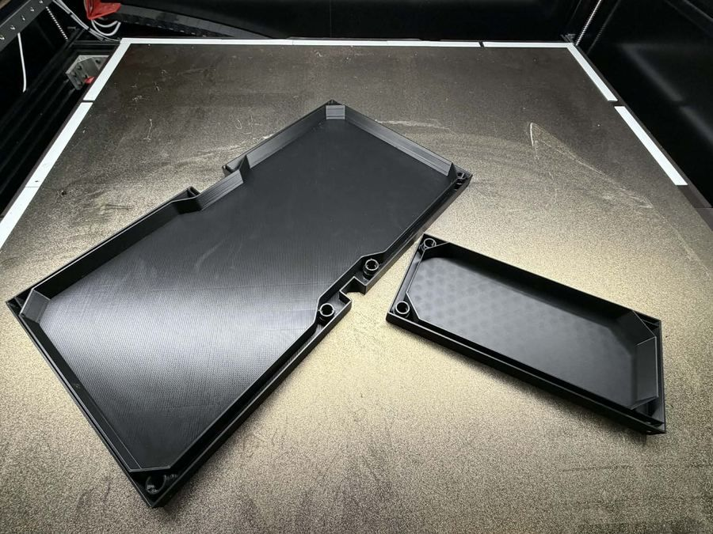
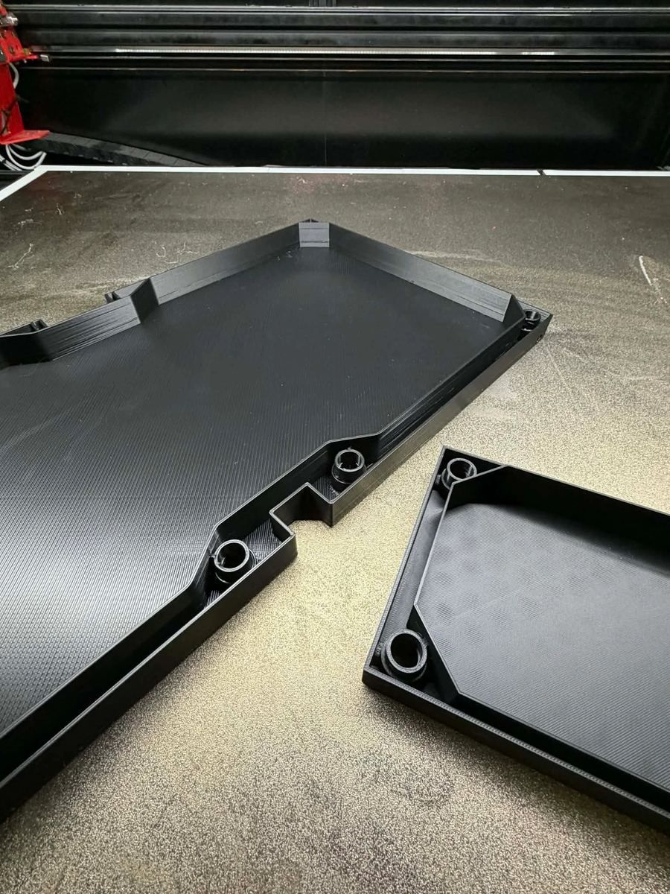
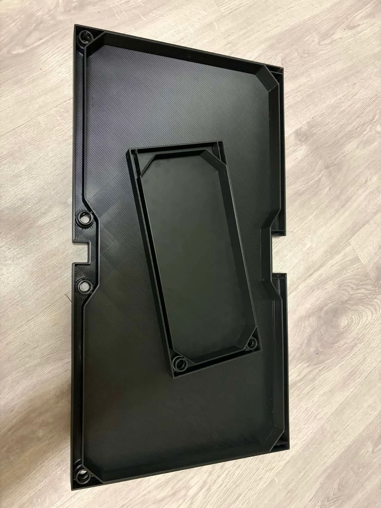
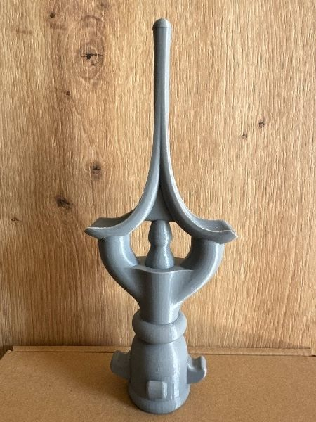

Portes de coffrets électriques reproduites pour la Ville de Spa
La Ville de Spa nous a confié la reproduction de portes de coffrets électriques à partir d'une pièce existante endommagée. Rétroconception complète, impression sur deux machines complémentaires, résultat conforme aux exigences terrain. Un partenariat public que nous sommes fiers de mettre en avant.

Les portes de coffrets électriques — du plateau à la livraison





Rétroconception d'une pièce technique pour la maintenance d'équipements urbains
Dans le cadre d'un besoin spécifique de maintenance, la Ville de Spa a fait appel à O&D Impression 3D pour la reproduction de portes de coffrets électriques à partir d'une pièce existante endommagée. L'objectif était clair: recréer une pièce fonctionnelle, fidèle à l'originale, tout en garantissant des délais courts et une qualité adaptée à une utilisation terrain.
Ce type de mission représente exactement ce que l'impression 3D permet de faire là où d'autres solutions échouent: quand une pièce technique est cassée, hors catalogue et qu'il faut la reproduire rapidement pour éviter un arrêt prolongé des équipements. Aucun fabricant standard ne peut répondre en quelques jours à une commande unitaire sur mesure de cette nature — l'impression 3D le peut.
La Ville de Spa, satisfaite du résultat et de la réactivité de notre équipe, prévoit déjà de faire à nouveau appel à nos services pour ses futurs besoins de maintenance et de remplacement de pièces.
Modélisation 3D complète à partir de la pièce endommagée
Le projet a débuté par une phase de rétroconception. Notre dessinateur a modélisé la pièce entièrement en 3D sur base de l'élément cassé fourni par le client. Cette étape — souvent sous-estimée — est la plus critique du projet: elle consiste à reconstruire un fichier 3D exploitable à partir d'une pièce physique dégradée, sans plan d'origine, sans documentation technique.
Notre dessinateur a analysé la géométrie de la porte, reconstruit chaque détail fonctionnel — systèmes d'emboîtement, ergots de fixation, épaisseurs de paroi — et intégré les ajustements nécessaires pour compenser l'usure de la pièce originale et garantir la solidité et la durabilité de la pièce reproduite.
Une fois le fichier 3D validé en interne, la production a pu démarrer. C'est là qu'intervient notre capacité multi-machines, clé pour ce type de projet combinant grandes dimensions et haute précision.
Deux machines complémentaires pour un résultat optimal
La fabrication a été optimisée en fonction des dimensions et des exigences du projet, en répartissant intelligemment le travail entre deux machines aux profils complémentaires.
🖨️ Modix Big Meter
La grande porte de coffret — d'environ 60 cm — a été imprimée à 5 reprises sur notre Modix Big Meter, notre machine grand format. Cette machine est équipée d'une buse diamant de chez Gühring, idéale pour les impressions longues et les pièces de grand volume. La buse diamant garantit une résistance à l'usure optimale sur les longues sessions d'impression que nécessitent des pièces de cette taille.
🖨️ Bambu Lab H2C
Les 5 éléments complémentaires de plus petite taille ont été produits sur notre Bambu Lab H2C. Cette machine, de précision industrielle, garantit une excellente qualité de finition et une précision dimensionnelle élevée sur les détails — particulièrement important pour les systèmes d'emboîtement qui doivent s'assembler parfaitement avec la grande porte.
O&D Impression 3D, partenaire des acteurs publics et industriels belges
Situé à Dolhain dans la commune de Baelen (province de Liège), O&D Impression 3D accompagne les entreprises et les acteurs publics belges dans leurs projets de fabrication sur mesure. Nous permettons à nos clients de remplacer rapidement des pièces, d'éviter des arrêts prolongés et de prolonger la durée de vie de leurs équipements — que ce soit pour une commune, une PME industrielle ou un particulier.
Ce que ce projet illustre concrètement Des délais très courts, adaptés aux besoins terrain des services de maintenance publique Une capacité de rétroconception complète — même sans plan d'origine, même sans documentation technique La combinaison de machines complémentaires pour répondre à des projets complexes (grand format + haute précision) La possibilité de reproduire des pièces uniques ou en petite série que l'industrie standard ne produit plus Une intégration rapide sur site grâce à la précision des assemblages garantie par notre processus
L'impression 3D pour la maintenance des équipements publics et industriels
Les communes, intercommunales, zones de police et établissements publics font face à un problème récurrent: des pièces techniques cassées, hors catalogue, impossibles à commander rapidement chez un fournisseur standard. Chaque jour d'arrêt d'un équipement public a un coût — humain, opérationnel, et parfois de sécurité.
Notre service de rétroconception et d'impression 3D permet de répondre à ces situations en quelques jours. Apportez-nous la pièce endommagée ou envoyez-nous des photos avec les dimensions — nous évaluons la faisabilité sous 24h, vous soumettons un devis, et produisons la pièce dès validation.
Nous intervenons pour toutes les communes de la province de Liège: Spa, Verviers, Liège, Eupen, Seraing, Huy et leurs environs. Livraison également dans toute la Belgique pour les organisations ne pouvant pas se déplacer.
Confidentialité & NDA: Les réalisations que nous partageons ici sont présentées avec l'accord explicite de nos clients. Tout projet soumis à un accord de non-divulgation reste strictement confidentiel — aucune photo, aucun détail technique ne sera jamais divulgué sans autorisation. Vos fichiers et projets sont protégés.
D'autres projets

Pièce en Polypropylène pour Logopède
Outil de rééducation sur mesure pour logopède, reproduit en polypropylène par impression 3D et adapté aux besoins des patients. Réalisation O&D…
Ouvrir la fiche →
Engrenage de Hachoir Reproduit en 3D
Engrenage de hachoir cassé reproduit en PLA : rétroconception en 1 h, pièce prête en moins de 48 h. Une réalisation d'O&D Impression 3D, Welkenraedt.
Ouvrir la fiche →
Pièces Audi S3 Reproduites en PAHT-CF
Reproduction de pièces Audi S3 endommagées en PAHT-CF et PLA : grille de pare-chocs et caches logo S3. Une réalisation d'O&D Impression 3D, Liège.
Ouvrir la fiche →
Maquette Infrabel
Rails miniatures en PLA imprimés en 3D pour la maquette d'inauguration d'Infrabel. Une réalisation d'O&D Impression 3D, atelier à Welkenraedt (Liège).
Ouvrir la fiche →
Semelles de Tabouret
Semelles de tabourets 40 cm en PLA noir, imprimées sur mesure pour des gîtes Airbnb à Herve : 24 h par pièce, prototype offert. Réalisation O&D…
Ouvrir la fiche →
Pic de Barrière Reproduit en ASA
Pic de barrière décoratif cassé, redessiné à partir de photos et réimprimé en ASA résistant aux UV sur Bambu Lab X1C. Réalisation O&D, Welkenraedt.
Ouvrir la fiche →Un projet similaire ?
Envoyez-nous votre pièce, votre fichier ou une simple photo : réponse sous 24 h.